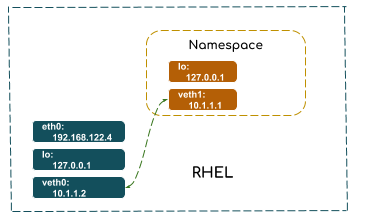
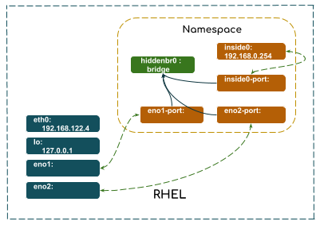

# ip netns add netns1Namespace
Table of Contents
什么是 Network Namespaces
-
Network namespaces provide a lightweight container-based virtualization that allows virtual network stacks to be associated with a process group. It creates an isolated copy of the networking data structures such as the interface list, sockets, routing table, the /proc/net/ directory, port numbers, and so on.
-
Network namespaces are managed through the ip interface (sometimes also referred to as iproute2), namely by the ip netns command.
基本管理
ip netns add 创建 Namespace
ip netns exec 在 Namespace 中运行网络管理命令
# ip netns exec netns1 ip link list
1: lo: <LOOPBACK> mtu 65536 qdisc noop state DOWN mode DEFAULT qlen 1
link/loopback 00:00:00:00:00:00 brd 00:00:00:00:00:00ip netns delete 删除 Namespace
# ip netns delete netns1配置
Active ::1 inside namespace
# ip netns exec netns1 ip link set dev lo up
# ip netns exec netns1 ip link
1: lo: <LOOPBACK,UP,LOWER_UP> mtu 65536 qdisc noqueue state UNKNOWN mode DEFAULT qlen 1
link/loopback 00:00:00:00:00:00 brd 00:00:00:00:00:00
[root@localhost ~]# ip netns exec netns1 ping 127.0.0.1 -c3
PING 127.0.0.1 (127.0.0.1) 56(84) bytes of data.
64 bytes from 127.0.0.1: icmp_seq=1 ttl=64 time=0.025 ms
64 bytes from 127.0.0.1: icmp_seq=2 ttl=64 time=0.027 ms
64 bytes from 127.0.0.1: icmp_seq=3 ttl=64 time=0.043 ms创建虚拟以太网设备，并关联到 namespace
# ip link add veth0 type veth peer name veth1
# ip link set veth1 netns netns1本地创建 Network namespace

如上图所示，在 RHEL 上创建一个 namespace netns1（RHEL 本地的网络环境相当于 root namespace），在 root 上创建一个虚拟以太网设备 vth0 关联一个 peer 设备 vteth1，并邦定 vteth1 给 netns1。vth0 和 vth1 分别邦定 IP 地址位 10.1.1.2 和 10.1.1.1。最终目的是配置完成的两个网络环境可以互相 ping 通，即 netns1 和 root 之间可以互相 ping 通。
1. 创建 namespace netns1
# ip netns add netns1
# ip netns list
netns12. 查看 netns1 网络设备
# ip netns exec netns1 ip link show
1: lo: <LOOPBACK> mtu 65536 qdisc noop state DOWN mode DEFAULT qlen 1
link/loopback 00:00:00:00:00:00 brd 00:00:00:00:00:00|
Note
|
loopback lo 设备的状态位 DOWN
|
3. 在 netns1 中 ping loopback 地址
# ip netns exec netns1 ping 127.0.0.1
connect: Network is unreachable|
Note
|
Network is unreachable 的原因是 loopback lo 设备的状态位 DOWN。
|
4. Active loopback 设备并测试
# ip netns exec netns1 ip link set dev lo up
# ip netns exec netns1 ping 127.0.0.1
PING 127.0.0.1 (127.0.0.1) 56(84) bytes of data.
64 bytes from 127.0.0.1: icmp_seq=1 ttl=64 time=0.023 ms5. 创建虚拟以太网设备，并关联到 netns1
# ip link add veth0 type veth peer name veth1
# ip link set veth1 netns netns16. 分别给 veth0 和 veth1 设定 IP 地址
# ip netns exec netns1 ifconfig veth1 10.1.1.1/24 up
# ifconfig veth0 10.1.1.2/24 up7. 互连通性测试
# ping 10.1.1.1
PING 10.1.1.1 (10.1.1.1) 56(84) bytes of data.
64 bytes from 10.1.1.1: icmp_seq=1 ttl=64 time=0.048 ms
64 bytes from 10.1.1.1: icmp_seq=2 ttl=64 time=0.031 ms
# ping -I veth0 10.1.1.1
PING 10.1.1.1 (10.1.1.1) from 10.1.1.2 veth0: 56(84) bytes of data.
64 bytes from 10.1.1.1: icmp_seq=1 ttl=64 time=0.059 ms
64 bytes from 10.1.1.1: icmp_seq=2 ttl=64 time=0.033 ms
# ip netns exec netns1 ping 10.1.1.2
PING 10.1.1.2 (10.1.1.2) 56(84) bytes of data.
64 bytes from 10.1.1.2: icmp_seq=1 ttl=64 time=0.032 ms
64 bytes from 10.1.1.2: icmp_seq=2 ttl=64 time=0.035 ms8. 查看 netns1 路由信息
# ip netns exec netns1 route
Kernel IP routing table
Destination Gateway Genmask Flags Metric Ref Use Iface
10.1.1.0 0.0.0.0 255.255.255.0 U 0 0 0 veth1
# ip netns exec netns1 ping 192.168.122.4
connect: Network is unreachable9. 在 netns1 上添加默认路由
# ip netns exec netns1 ip route add default via 10.1.1.2
# ip netns exec netns1 ping 192.168.122.4
PING 192.168.122.4 (192.168.122.4) 56(84) bytes of data.
64 bytes from 192.168.122.4: icmp_seq=1 ttl=64 time=0.035 ms
64 bytes from 192.168.122.4: icmp_seq=2 ttl=64 time=0.038 ms本地 Namespace hidden

1. 创建 namespace hidden
# ip netns add hidden2. Active loopback 设备并测试
# ip netns exec hidden ip link set dev lo up
# ip netns exec hidden ping 127.0.0.1
PING 127.0.0.1 (127.0.0.1) 56(84) bytes of data.
64 bytes from 127.0.0.1: icmp_seq=1 ttl=64 time=0.035 ms
64 bytes from 127.0.0.1: icmp_seq=2 ttl=64 time=0.037 ms3. 在 namespace 中创建 bridge 并启动
# ip netns exec hidden brctl addbr hiddenbr0
# ip netns exec hidden ip link set dev hiddenbr0 up4. 创建虚拟以太网设备，关联到 namespace，并将虚拟 port 关联到 bridge
# ip link add eno1 type veth peer name eno1-port
# ip link set eno1-port netns hidden up
# ip netns exec hidden brctl addif hiddenbr0 eno1-port
# ip link add eno2 type veth peer name eno2-port
# ip link set eno2-port netns hidden up
# ip netns exec hidden brctl addif hiddenbr0 eno2-port5. 在 namespace 中创建虚拟以太网设备，并分配 IP 地址，并关联到 bridge
ip netns exec hidden ip link add inside0 type veth peer name inside0-port
ip netns exec hidden brctl addif hiddenbr0 inside0-port
ip netns exec hidden ip link set inside0-port up
ip netns exec hidden ip link set inside0 up
ip netns exec hidden ip addr add 192.168.0.254/24 dev inside06. 启动虚拟设备 eno1 和 eno2
# ip link set dev eno1 up
# ip link set dev eno2 up